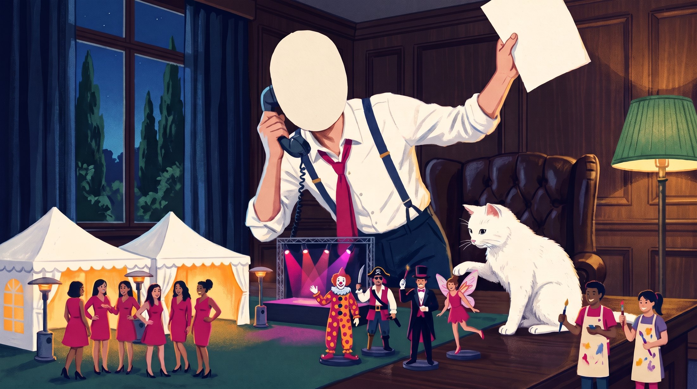
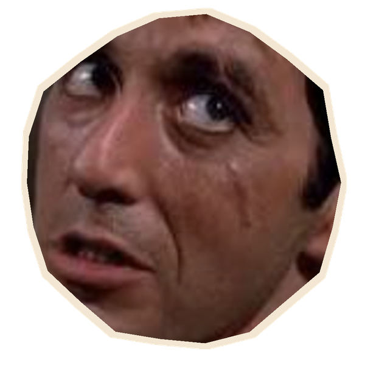
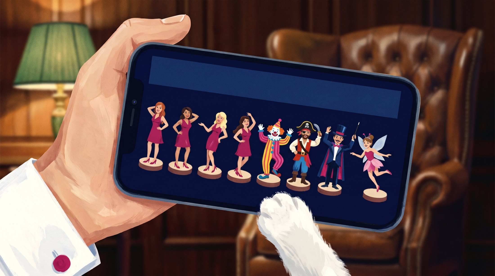
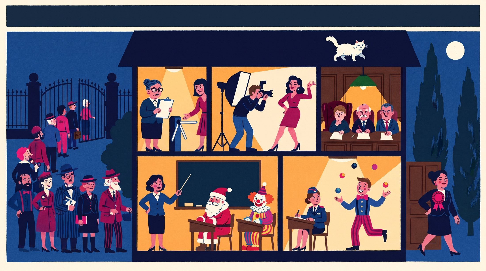
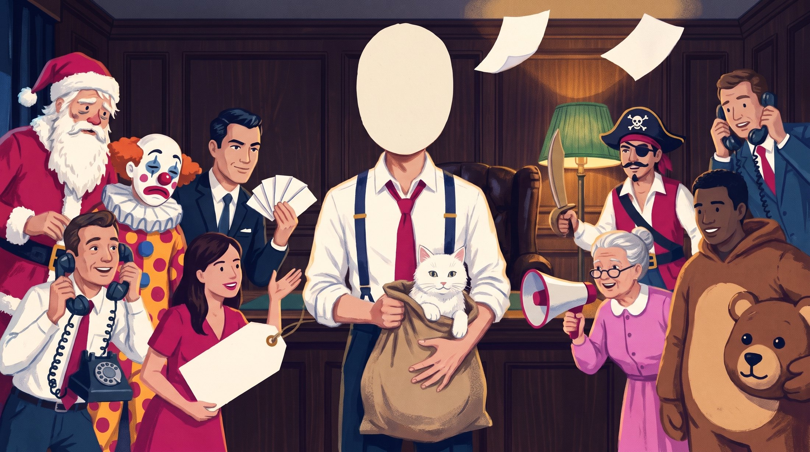

Деловой мультик на вилле
Четыре ключевых кадра второй части. Рисованная гуашь с коллажем: мир виллы из первой части остаётся, кот остаётся, а у Ивана настоящая фотоголова. Надписи лежат поверх картинок кодом, их можно править без перерисовки.
- ночь, вилла, зелёная лампа
- малина и фуксия только в акцентах
- голова Ивана из фото
- кот из первой части в каждом кадре
- надписи от руки и на бумажных плашках
Иван и его корпоратив
сцена 3 · 11 секунд

Иванподтвердили!
Вот Иван. Ему только что подтвердили корпоратив на 100 человек. Шатры, обогреватели и сцена поедут от нас. А ещё нужны 6 промо-моделей, 4 аниматора и аниматоры на детские мастер-классы.
В движении: плашки появляются по словам Насти, кот толкает лапой фею, лист в руке Ивана качается.
Команда собирается в телефоне
сцена 4 · 8 секунд
Иван открывает сделку в Тони Старке и жмёт «Отправить запрос в Человеки». Всё! Запрос улетел. А в телефоне видно, как собирается команда.
В движении: человечки по одному запрыгивают на кружки, полоса растёт с каждым. На картинке сейчас 8 фигурок, в ролике дорисуем до нужного числа.
Завод «Человеки»
сцена 5 · 17 секунд
«Человеки» — это завод сотни на входе отбор портфолио экзамен каждый месяц методисты школа качестваА теперь за кулисы. «Человеки» — это завод. На входе сотни людей. Мы отбираем лучших. У каждого полное портфолио в приложении. С ними работают методисты. Каждый месяц обучение и экзамен: квалификацию надо подтверждать. Это наша школа качества. «Человеки» — это знак качества.
В движении: камера едет слева направо по комнатам, в каждой загорается свет на своей фразе, в конце печать ставится со стуком.
Как было раньше: кот в мешке
сцена 6 · 8 секунд
множество подрядчиковА как было раньше? Множество подрядчиков. Цена выше рынка. Кто приедет, всегда кот в мешке. А нужное число людей в одном месте не собрать.
В движении: подрядчики вваливаются с краёв по одному, бумаги летят, кот высовывается из мешка на словах «кот в мешке».